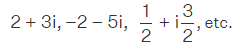

Part 2 — Software Development Imagine Python didn’t support imaginary numbers natively but you needed this feature for a project. How would you add this feature? Implement essential functionality, such as addition, subtraction, division, and multiplication. Think about other aspects that need to be covered and either implement them as well or create placeholders with TODOs. Consider adding documentation and some tests.
Imaginary numbers are numbers that result in a negative number when squared. They are also defined as the square root of negative numbers. An imaginary number is the product of a non-zero real number and the imaginary unit "i" (which is also known as "iota"), where i = √(-1) (or) i2 = -1. Is any of the results a negative number? No. It means the square of any real number is always positive. Then what number results in a negative square? It is an imaginary number. In math, we come across the square root of negative numbers many times, especially in the case of solving quadratic equations using the quadratic formula. In such cases, the usage of imaginary numbers is mandatory. Here are some imaginary numbers examples:
√(-4) = √(-1) · √4 = i (2) = 2i
√(-3) = √(-1) · √3 = i √3
In the above examples, 2i and i √3 are imaginary numbers. We can see that each of these numbers is a product of a non-zero real number and i. Thus, we can derive a rule for imaginary numbers which is:
√(-x)=i √x
imaginary Number=Real Number * i
where i=√-1
Example: 3i, -2, i√2
These are a part of complex numbers, where a complex number is the sum of a real number and an imaginary number.
i.e., a complex number is of the form a + ib,
where both 'a' and 'b' are real numbers and here bi is an imaginary number.
A complex number is the sum of a real number and an imaginary number. A complex number is of the form a + ib and is usually represented by z. Here both a and b are real numbers. The value 'a' is called the real part which is denoted by Re(z), and 'b' is called the imaginary part Im(z). Also, ib is called an imaginary number. Some of the examples of complex numbers are:

Power of i
The alphabet i is referred to as the iota and is helpful to represent the imaginary part of the complex number. Further the iota(i) is very helpful to find the square root of negative numbers. We have the value of i2 = -1, and this is used to find the value of √-4 = √i24 = +2i The value of i2 = -1 is the fundamental aspect of a complex number. Let us try and understand more about the increasing powers of i.
Create a class and Constructor to initialize an object's state.
class Complex(object):
def __init__(self, real_part, imaginary_part):
self.real_part = real_part
self.imaginary_part = imaginary_part
Create a Magic methods to operator overloading:
def __add__(self, second_num):
return Complex(self.real_part + second_num.real_part, self.imaginary_part + second_num.imaginary_part)
def __sub__(self, second_num):
return Complex(self.real_part - second_num.real_part, self.imaginary_part - second_num.imaginary_part)
def __mul__(self, second_num):
return Complex(self.real_part * second_num.real_part - self.imaginary_part * second_num.imaginary_part,
self.real_part * second_num.imaginary_part + second_num.real_part * self.imaginary_part)
def __truediv__(self, second_num):
denominator = second_num.real_part ** 2 + second_num.imaginary_part ** 2
if denominator==0:
return "Denominator cannot be zero "
else:
return Complex((self.real_part * second_num.real_part + self.imaginary_part * second_num.imaginary_part) / denominator,
(self.imaginary_part * second_num.real_part - self.real_part * second_num.imaginary_part) / denominator)
Create another Magic methods to convert Python objects into strings :
def __str__(self):
if self.imaginary_part == 0:
result = "%.2f+0.00i" % (self.real_part)
elif self.real_part == 0:
if self.imaginary_part >= 0:
result = "0.00+%.2fi" % (self.imaginary_part)
else:
result = "0.00-%.2fi" % (abs(self.imaginary_part))
elif self.imaginary_part > 0:
result = "%.2f+%.2fi" % (self.real_part, self.imaginary_part)
else:
result = "%.2f-%.2fi" % (self.real_part, abs(self.imaginary_part))
return result
Implement addition, subtraction, division, and multiplication:
if __name__ == '__main__':
x=Complex(2,4)
y=Complex(3,5)
print(*map(str, [x+y, x-y, x*y, x/y]), sep='\n')
Output:
5.00+9.00i
-1.00-1.00i
-14.00+22.00i
0.76+0.06i